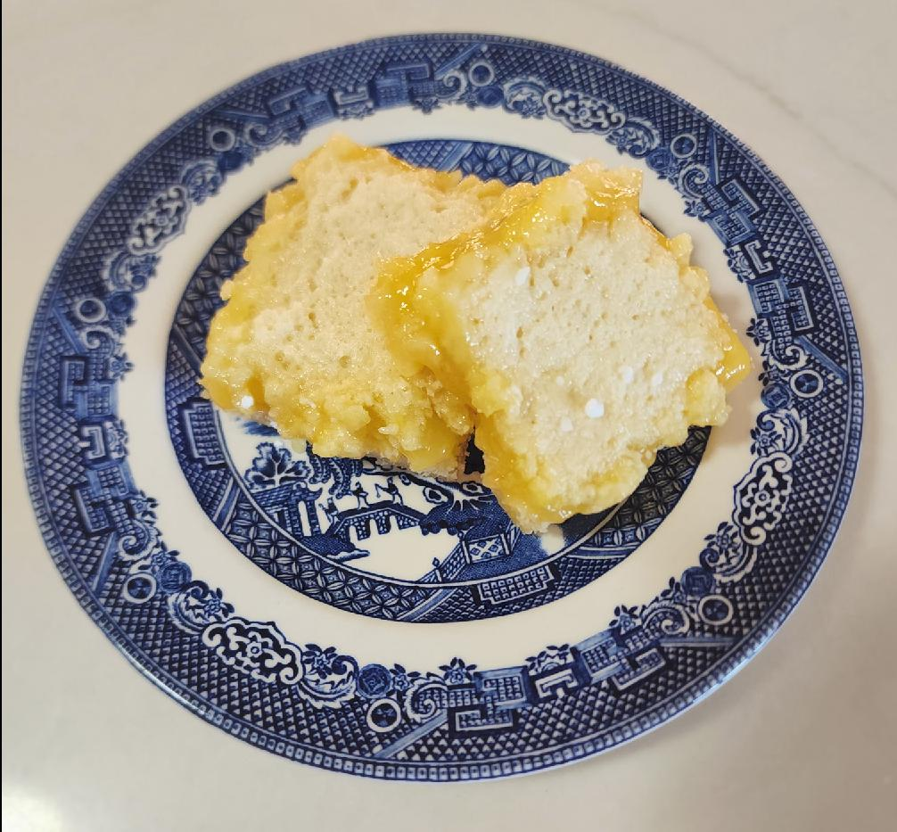

Lemon Bars

Ingredients
Shortbread Crust
- 1 C all-purpose flour
- ½ C unsalted butter at room temperature
- ¼ C confectioners' sugar
- ¼ tsp vanilla extract
- ¼ tsp salt
Lemon Custard
- 2 large eggs
- 1 large egg yolks
- 1 C white sugar
- 2 tbs all-purpose flour
- ¼ C freshly squeezed lemon juice
- 1 tbs freshly grated lemon zest
- 1 tsp confectioners' sugar, or to taste (garnish)
Directions
Shortbread Crust
- Set an oven rack to the middle position and preheat the oven to 350°F. Lightly grease an 8x8" baking dish
- Use the back of a spatula or wooden spoon to mash flour and butter in a large bowl until thoroughly combined. Mix in confectioners' sugar, vanilla, and salt until mixture resembles slightly crumbly cookie dough.
- Moisten your fingers with a little water and press dough into the bottom of the prepared baking dish. Use a fork to prick holes all over crust.
- Bake on the middle rack in the preheated oven until edges are barely golden brown, about 22 minutes. Set aside.
Lemon Custard
- Beat eggs and egg yolks in a medium bowl until combined, then whisk in white sugar and flour until smooth.
- Add lemon juice and zest; whisk for 2 minutes. Pour over warm crust.
- Bake on the center rack until custard is set and the top has a thin white sugary crust, about 25 minutes. Let cool completely before cutting into bars.
- Dip a knife into very hot water, then run the blade around the edges and cut into 16 squares. Dust bars with confectioners' sugar
Chef's Notes
- Pro Tip: Line the bottom of your 8x8 pan with parchment paper and give it a light coat of butter for the best release
Michael Fritsche
mbf@fritsche.org